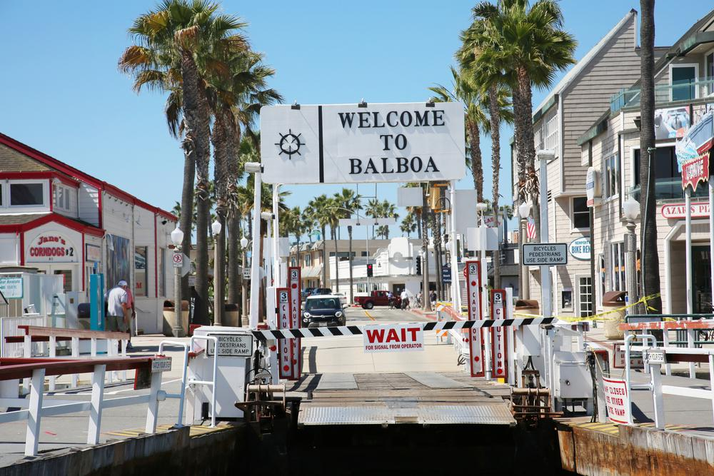

- Patrick
- Coding
- Drawing
- Birds
- School
- Favorite Trip
- Favorite Games
.jfif)
-I tend to love all kinds of games but my very favorite genras tend to be tower defence, card games, rpgs, and metroidvanias. The genra I do not like as much are fps's.
Favorite Games
-Hallow Knight
-Inscryption
-Pokemon
-Bloons Tower Defence
-Plants VS Zombies

My favorite trip that we take or at least stop by is a little island called balboa island. It is a little man-made island that my family has been going to for years. When I was younger, we use to rent a beachouse, but recently it has been a daytrip, which is still incredibly fun. I have and will love every trip to balboa.

Westmec northeast campus is the school that I currently take coding at. ALthoguh I have already talked a lot about the coding side I have also met very kind and helpful teachers, students, and staff.
At Pinnacle highschool, I take the normal classes along with the electives college communication and Advanced Art.

FLAMINGO- This colorful bird has plumage that is a distinctive pink color with black flight feathers along the edges of the wings. It has a slender body and very long legs, a long, flexible neck and a small head. The flamingo's bill has a characteristic downward bend. Compared with its long legs, a flamingo's feet are relatively small.
.jfif)
My drawing is going well over all althoguh have defenlty take a backseat recently becuase most if not all of my brainpower has gone to coding. Althoguh I still had times to let my creativity flow.
.jfif)
This year I have decided to actully develop a useful skill for myself, exept drawing, and learn how to develop websites and games. I am currently 3/4th through the first year and am exited for what is to come.
Age-17
Grade-11
Birthday-2/12/06